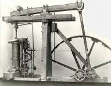
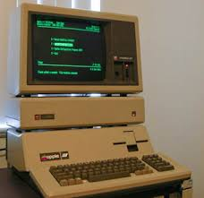

Revolusi Industri: Perubahan Besar dalam Sejarah
Revolusi Industri 1.0
Perkembangan Revolusi Industri 1.0
Revolusi Industri 1.0 terjadi pada abad ke-18 (1760–1840) dengan penemuan mesin uap oleh James Watt pada tahun 1776 di Inggris, membawa perubahan besar di berbagai sektor. Mesin uap berbahan bakar batu bara ini digunakan terutama untuk produksi tekstil di Inggris.
baca selanjutnya Revolusi Industri 2.0
Perkembangan Revolusi Industri 2.0
Revolusi Industri 2.0 terjadi pada awal abad ke-19 (1870-an) dan berfokus pada efisiensi mesin di setiap lini produksi (Assembly Line) berkat ditemukannya tenaga listrik. Misalnya, produksi mobil secara massal mulai memanfaatkan lini produksi pada tahun 1913, di mana proses perakitan menjadi lebih efisien dengan konsep Assembly Line menggunakan Conveyor Belt.
baca selanjutnya
Revolusi Industri 3.0
Perkembangan Revolusi Industri 3.0
Revolusi Industri 3.0 terjadi pada awal abad ke-20 (1970-an) dan dipicu oleh perkembangan mesin-mesin pintar (Komputer & Software) berbasis teknologi otomasi yang perlahan menggantikan peran manusia di lapangan.
baca selanjutnya Revolusi Industri 4.0
Perkembangan Revolusi Industri 4.0
Revolusi Industri 4.0 adalah era saat ini, di mana teknologi seperti internet, komputerisasi, microchip, IOT, kecerdasan buatan (AI), machine learning, deep learning, cloud analytics, hingga kendaraan otonom merevolusi setiap proses produksi hingga distribusi, dengan fokus pada keberlanjutan (Sustainability).
baca selanjutnya